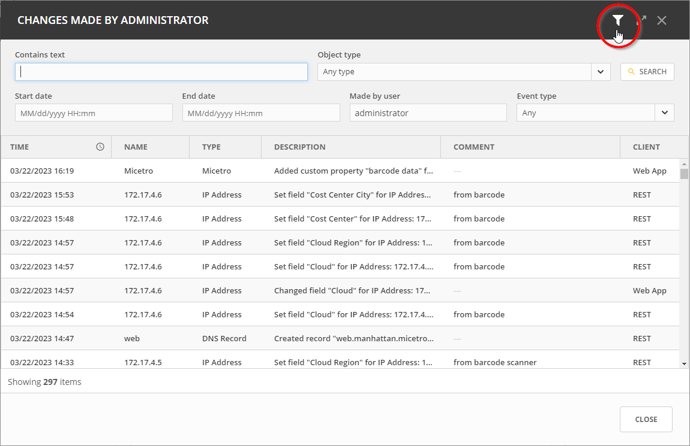
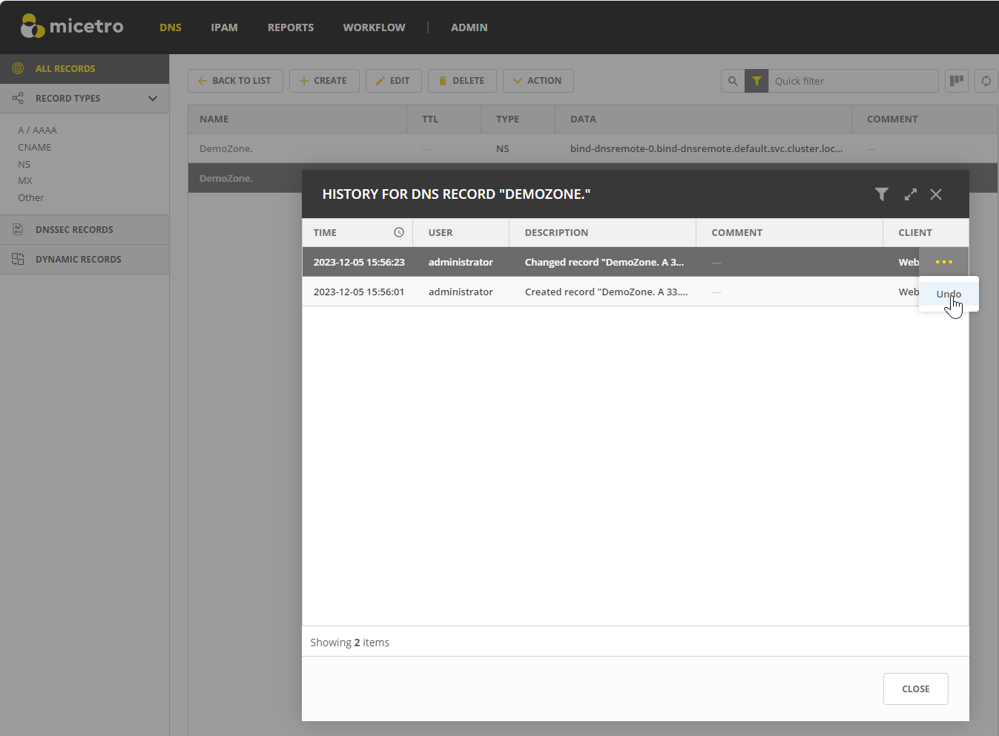

Viewing Object Change History
You can access and navigate all changes made to any object in Micetro. The object change history provides a detailed log of all modifications made to any object, including timestamps, user information, actions taken, and user-entered comments.
Permissions:
Permission:
Access to view historyon Micetro.Role:
Administrator (built-in)
Note
For information about how to view object change history in the Management Console, see Object Change History.
All users can view their own object change history, while administrators have access to the history of all users.
You can view the history of a specific object or all objects.
To view your own changes:
Click the User icon in the upper-right corner.
Select View history.
To view changes to a specific object:
Select the object you want to view.
On the Action menu, select View history. You can also select this option on the Row … menu.
To filter data in the Change History window:
Click the filter icon in the top right corner.
Enter or select the relevant information and click Search.
If you’re viewing global object history, you can narrow down results by selecting an object type.
Administrators can specify a username in the Made by user box to filter changes by specific users.
{kind=link}
Undoing Changes
You have the option to revert changes to DNS records and custom properties for all objects.
To undo changes:
Locate the specific action in the object history window that you want to undo, and click on the Row … menu associated with it.
Select Undo.
Enter a comment for the action, and select Save to confirm the undo action and revert the selected change.
{kind=link}